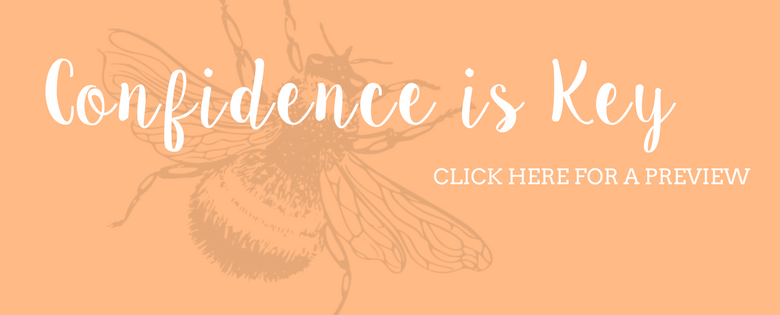

Announcements
Here will be announcements such as charity of the month, and other things I haven't thought of yet...
Most Recent

We’ve all experienced that dark cloud. The feeling of bleak emptiness that consumes every aspect of our lives. It feels so intense, but leaves you feeling nothing. What do you do when you get into this state of mind? How do you support someone you know with depression?
Now, those of you who know me well will know that I’m a confident person. Never afraid to speak my mind (despite this not always being the wisest of things…) and always able to do well socially. Some of you might think I’m a bit over confident sometimes, and I probably am… but who’s perfect right?

The chronicles of a curvy girl. I’m so so so excited to start this series, because as I’m sure you’re aware by now, I’m rather opinionated. So where to start. Well I thought I would talk about body confidence, which follows nicely on from last weeks post Confidence Is Key. How do you get body confident? Where does that come from? Does it even exist?

So I thought that this would be a good first post for me seeing as the start of uni and school is looming, I can remember that I internally struggled with friendships because of who I am as a person. If you’re going to a new school or university and you don’t know anyone, it can be really nerve-racking. I’m going to focus this post more towards university students simply because going to university is slightly different than going to a new school and I’ll write a post about new schools another time...

I have been told numerous times in the past that “beauty comes from the inside” and I’m a firm believer in this. If you have a poisonous inside it is more than likely to spread and infect all aspects of your life. But sometimes it just doesn’t seem that simple. I simply find it hard to believe that when I look in the mirror and I’m feeling like Quasimodo that I am ‘beautiful’ inside.